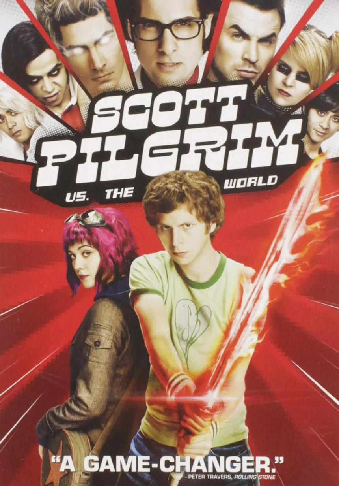
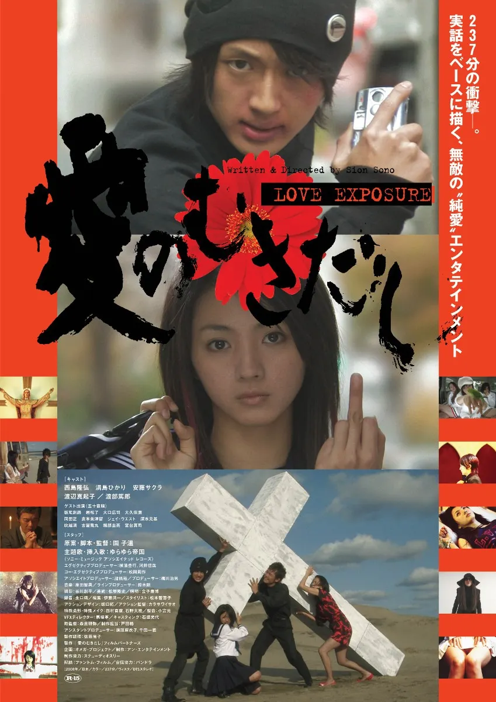
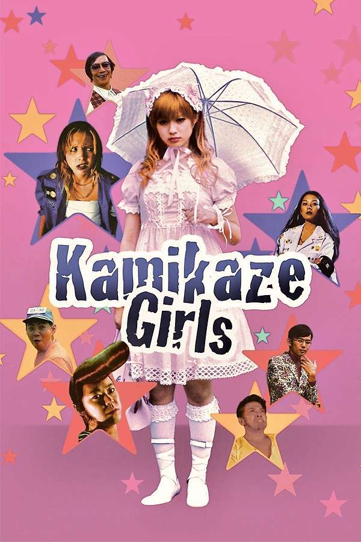
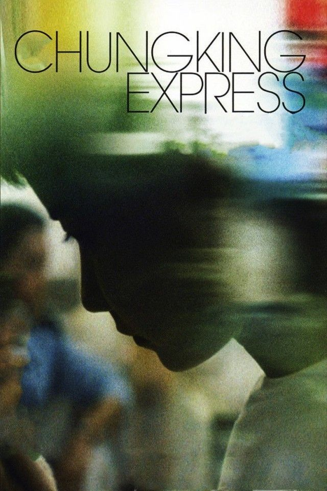

Scott Pilgrim vs The World

Scott Pilgrim contra o Mundo (Scott Pilgrim vs. the World), lançado em 2010 e dirigido por Edgar Wright, é uma adaptação cinematográfica da famosa série de romances gráficos criada por Bryan Lee O'Malley. O filme tornou-se um clássico cult pelo seu estilo visual inovador e pela sua narrativa enérgica.
Love Exposure

Love Exposure (Ai no Mukidashi), lançado em 2008 e dirigido pelo aclamado realizador japonês Sion Sono, é uma obra-prima cult do cinema independente contemporâneo. Com cerca de quatro horas de duração, o filme é uma mistura épica, insólita e frenética de comédia negra, drama, romance, religião e artes marciais.
Kamikaze Girls

Kamikaze Girls (Shimotsuma Monogatari), lançado em 2004 e dirigido por Tetsuya Nakashima (com base no romance de Novala Takemoto), é uma comédia cult japonesa que se tornou num marco da cultura pop e do cinema estilizado dos anos 2000.
All About Lily Chou-Chou

All About Lily Chou-Chou (2001), dirigido por Shunji Iwai, é um dos filmes mais aclamados, melancólicos e esteticamente marcantes do cinema independente japonês. O longa explora a solidão adolescente, a dor do bullying e a busca por refúgio emocional no início da era da internet.
Chungking Express

Chungking Express (1994), escrito e dirigido por Wong Kar-wai, é um dos filmes mais influentes do cinema de Hong Kong e uma das obras-primas da estética cinematográfica dos anos 90.
Hana & Alice

Hana & Alice (2004), escrito, dirigido e composto pelo lendário diretor japonês Shunji Iwai, é uma comédia dramática coming-of-age leve, poética e repleta de sensibilidade sobre a amizade feminina, os primeiros amores e as mentiras inocentes da juventude. O filme nasceu originalmente a partir de uma série de curtas-metragens encomendados para comemorar os 100 anos do kit kat no Japão, que depois foi expandido por Shunji Iwai para um longa-metragem de sucesso.